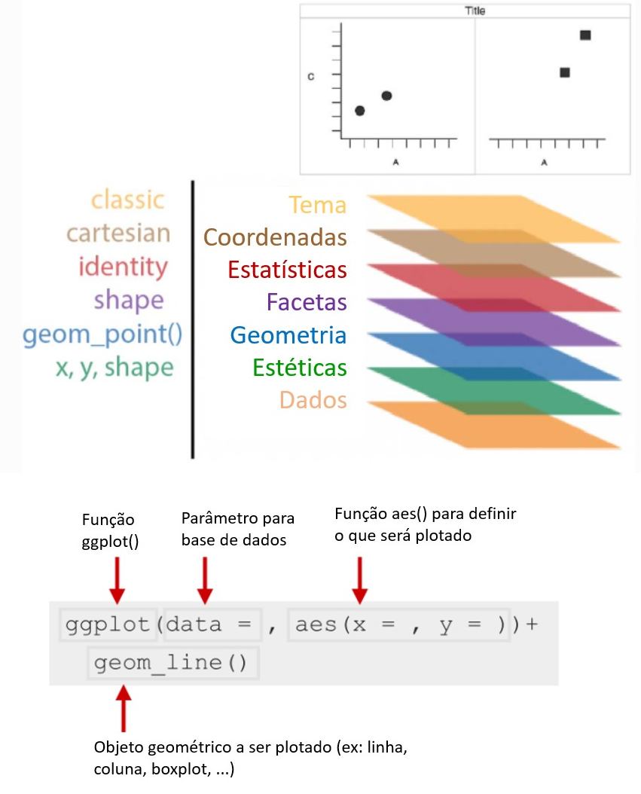
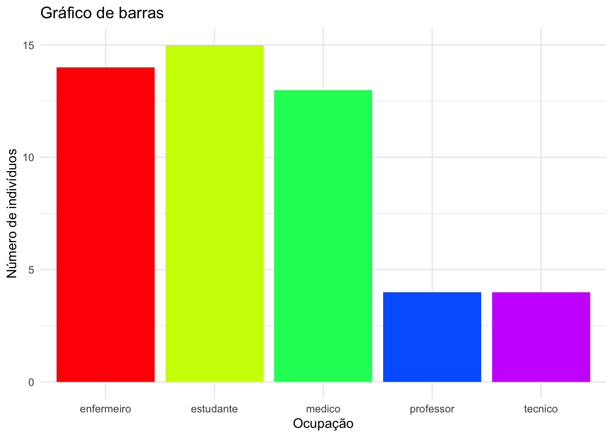
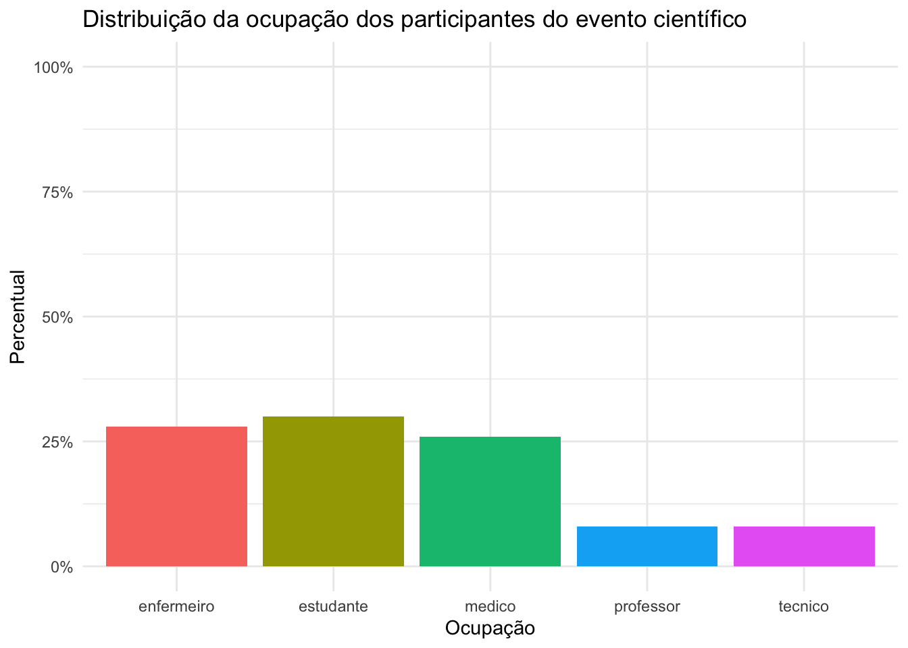
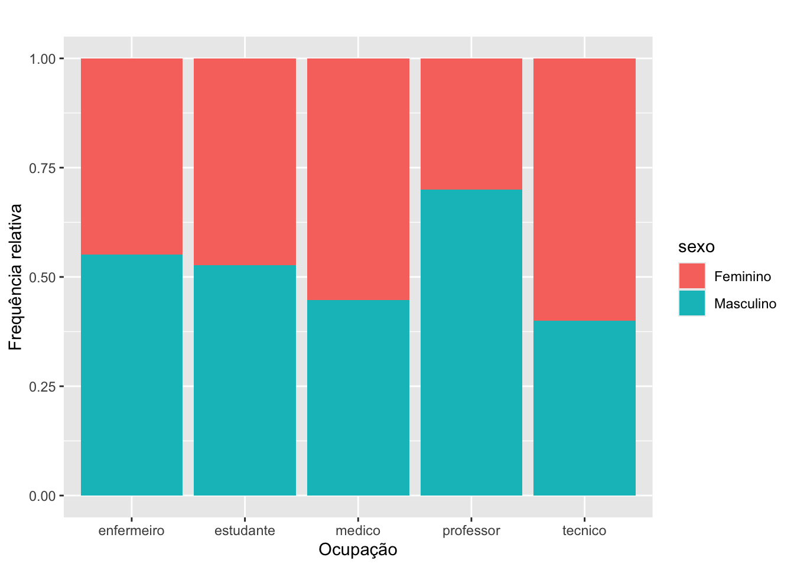
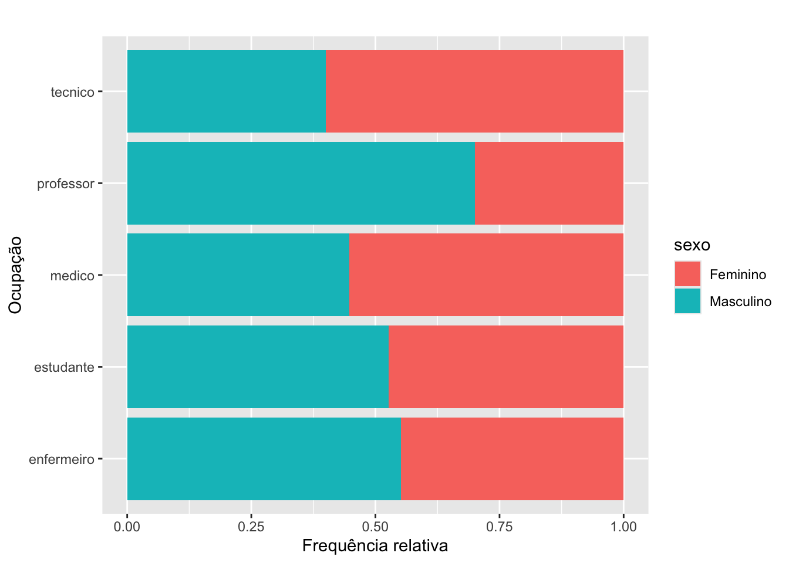
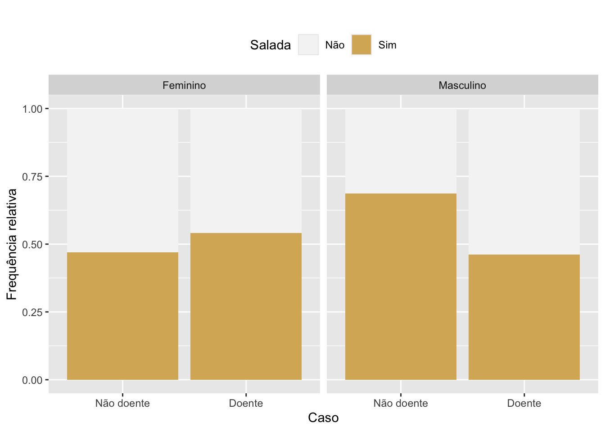

Warning: package 'knitr' was built under R version 4.3.3Warning: package 'gtsummary' was built under R version 4.3.3A seguir veremos comandos básicos para o cálculo de distribuição de frequências para as variáveis categóricas do banco de dados surto.
Warning: package 'knitr' was built under R version 4.3.3Warning: package 'gtsummary' was built under R version 4.3.3surto <- readxl::read_excel("./data/surto.xlsx",
sheet = "Plan1")
surto <- mutate(surto,
caso = factor(caso, labels=c('Não','Sim')),
sexo = factor(sexo, labels=c("Feminino","Masculino")),
ocupa = factor(ocupa),
diarreia = factor(diarreia, labels=c('Não','Sim')),
colica = factor(colica, labels=c('Não','Sim')),
vomito = factor(vomito, labels=c('Não','Sim')),
nausea = factor(nausea, labels=c('Não','Sim')),
cefaleia = factor(cefaleia, labels=c('Não','Sim')),
desidratacao = factor(desidratacao,labels=c('Não','Sim')),
febre = factor(febre,labels=c('Não','Sim')),
servsaude = factor(servsaude, labels=c('Não','Sim')),
gravidade = factor(gravidade, order = TRUE, labels=c('Leve','Moderado',"Grave")),
salada = factor(salada, labels=c('Não','Sim')),
pao = factor(pao, labels=c('Não','Sim')),
medalhao = factor(medalhao, labels=c('Não','Sim')),
macarrao = factor(macarrao, labels=c('Não','Sim')),
molhoqueijo = factor(molhoqueijo, labels=c('Não','Sim')),
molhoverm = factor(molhoverm, labels=c('Não','Sim')),
pudim = factor(pudim, labels=c('Não','Sim')),
frutas = factor(frutas, labels=c('Não','Sim')),
agua = factor(agua, labels=c('Não','Sim')),
suco = factor(suco, labels=c('Não','Sim'))
)Base
#Usando o comando table
#O cifrão usado entre o nome do banco de dados e o nome da variável é responsável por
#filtrar apenas as observações da variável em questão.
table(surto$caso)
Não Sim
100 50 #Usando o comando prop.table
#calcula a proporção
prop.table( table(surto$caso) )
Não Sim
0.6666667 0.3333333 #Frequência absoluta
#variável agua na linha e variável caso na coluna
tab <- table(surto$agua,surto$caso)
tab
Não Sim
Não 40 15
Sim 60 35#Frequência relativa
prop.table(tab) #total geral
Não Sim
Não 0.2666667 0.1000000
Sim 0.4000000 0.2333333prop.table(tab, 1) #por linha
Não Sim
Não 0.7272727 0.2727273
Sim 0.6315789 0.3684211prop.table(tab,2) #por coluna
Não Sim
Não 0.4 0.3
Sim 0.6 0.7Tidyverse + knitr
Quantos homens e quantas mulheres há na amostra?
Para responder essa pergunta precisamos usar as funções group_by para agrupar pela variável sexo e summarise para a contagem de suas categorias, usando a função n(). Já a função kable, do pacote knitr, é utilizada para construir tabelas de maneira simples tanto no R quanto em documentos R Markdown. O argumento col.names da função kable, permite nomear as colunas da tabela.
| Sexo | Freq. Absoluta |
|---|---|
| Feminino | 73 |
| Masculino | 77 |
Na amostra há 73 participantes do sexo feminino e 77 do sexo masculino.
Para acrescentarmos os percentuais de cada categoria na tabela construida acima, precisaremos utilizar a função mutate().
| sexo | freq_absoluta | percentual |
|---|---|---|
| Feminino | 73 | 48.7 |
| Masculino | 77 | 51.3 |
Na amostra há 73 (49%) participantes do sexo feminino e 77 (51%) do sexo masculino.
surto %>%
group_by(sexo, caso) %>%
summarise(freq_absoluta = n()) %>%
pivot_wider(names_from = caso, values_from = freq_absoluta) %>% #transforma dados de formato "longo" para "largo"
kable( col.names = c("Sexo", "Não Caso", "Caso"),
caption = "Distribuição de doentes e não doentes por sexo",
align = c('c', 'c') )| Sexo | Não Caso | Caso |
|---|---|---|
| Feminino | 49 | 24 |
| Masculino | 51 | 26 |
Notem que 24 participantes do congresso são do sexo feminino e adoeceram.
tidyverse + gtsummary
Além das funções usuais do tidyverse, usaremos a função tbl_summary do pacote gtsummary.
Consultando o help para a função tbl_summary, temos:
tbl_summary(
data,
by = NULL,
label = NULL,
statistic = NULL,
digits = NULL,
type = NULL,
value = NULL,
missing = NULL,
missing_text = NULL,
sort = NULL,
percent = NULL,
include = everything()
)É um bom hábito procurar no help as explicações para os elementos da função!!!
sintomas <- c("diarreia", "colica", "vomito", "nausea", "cefaleia", "desidratacao", "febre")
surto %>%
filter(caso=="Sim") %>%
select(all_of(sintomas)) %>%
tbl_summary(missing = "no",
label = c( diarreia ~ "Diarreia",
colica ~ "Cólica",
vomito ~ "Vômito",
nausea ~ "Náusea",
cefaleia ~ "Cefaleia",
desidratacao ~"Desidratação",
febre ~ "Febre")) %>%
modify_header(label ~ "**Sintoma**")| Sintoma | N = 501 |
|---|---|
| Diarreia | |
| Não | 13 (26%) |
| Sim | 37 (74%) |
| Cólica | |
| Não | 19 (38%) |
| Sim | 31 (62%) |
| Vômito | |
| Não | 23 (46%) |
| Sim | 27 (54%) |
| Náusea | |
| Não | 21 (42%) |
| Sim | 29 (58%) |
| Cefaleia | |
| Não | 30 (60%) |
| Sim | 20 (40%) |
| Desidratação | |
| Não | 43 (86%) |
| Sim | 7 (14%) |
| Febre | |
| Não | 33 (85%) |
| Sim | 6 (15%) |
| 1 n (%) | |
tbl <- surto %>%
select(caso, agua, pao) %>%
tbl_summary(by = caso,
missing = "no",
label = c(agua ~ "Água",
pao ~ "Pão")) %>%
modify_header(label ~ "**Alimento**")
tbl| Alimento |
Não N = 1001 |
Sim N = 501 |
|---|---|---|
| Água | ||
| Não | 40 (40%) | 15 (30%) |
| Sim | 60 (60%) | 35 (70%) |
| Pão | ||
| Não | 66 (66%) | 30 (60%) |
| Sim | 34 (34%) | 20 (40%) |
| 1 n (%) | ||
####
show_header_names(tbl)Column Name Header level* N* n* p*
label "**Alimento**" 150 <int>
stat_1 "**Não** \nN = 100" Não <chr> 150 <int> 100 <int> 0.667 <dbl>
stat_2 "**Sim** \nN = 50" Sim <chr> 150 <int> 50 <int> 0.333 <dbl> * These values may be dynamically placed into headers (and other locations).
ℹ Review the `modify_header()` (`?gtsummary::modify()`) help for examples.####
tbl %>%
modify_spanning_header(c(stat_1, stat_2) ~ "**Caso**")| Alimento |
Caso
|
|
|---|---|---|
|
Não N = 1001 |
Sim N = 501 |
|
| Água | ||
| Não | 40 (40%) | 15 (30%) |
| Sim | 60 (60%) | 35 (70%) |
| Pão | ||
| Não | 66 (66%) | 30 (60%) |
| Sim | 34 (34%) | 20 (40%) |
| 1 n (%) | ||
Para cada tipo de variável há uma representação mais adequada de gráficos e tabelas. Nesse tutorial, focaremos na elaboração de gráficos que mostrem adequadamente o que se pretende visualizar. Afinal, uma tabela nem sempre resume os dados de forma eficiente, por isso os gráficos são importantes aliados.
ggplot2
Em 2005, Leland Wilkinson publicou o livro The Grammar of graphics, onde defendeu que um gráfico é o mapeamento dos dados a partir de atributos estéticos (posição, cor, forma, tamanho) de objetos geométricos (pontos, linhas, barras, caixas).
A partir dessa definição, Hadley Wickham escreveu A Layered Grammar of Graphics, sugerindo que os principais aspectos de um gráfico (dados, sistema de coordenadas, rótulos e anotações) podiam ser divididos em camadas, construídas uma a uma na elaboração do gráfico (curso-r). Essa é a essência do ggplot2:

Para exemplificação do pacote ggplot2, considere o banco de dados surto.
Os gráficos, no pacote ggplot2, são construídos por camadas e, a primeira delas é dada pela função ggplot(). Essa função inicializa um objeto ggplot, ou seja, ela recebe um data frame e gera a camada base do gráfico. Se rodarmos apenas a função ggplot(), obteremos um painel em branco.
Além da base de dados, precisamos especificar como as observações serão mapeadas e qual a forma geométrica utilizada. Cada camada do gráfico representará um tipo de mapeamento ou personalização.

#A função aes(x = sexo) define o mapeamento estético, ou seja, qual variável do data frame será usada no eixo x do gráfico.E, então, podemos acrescentar camadas ao gráfico para melhor estética e visualização dos dados. Mais detalhes em curso-r.
#Qual a distribuição dos doentes segundo ocupação?
surto %>%
filter(caso == "Sim") %>%
ggplot(aes(x=ocupa, fill=ocupa)) + # determina a base de dados e o que irá aparecer nos eixos x e y
geom_bar(fill=rainbow(5)) + # determina gráfico de barras e a cor
ggtitle("Gráfico de barras") + #título
labs(y="Número de indivíduos", x="Ocupação") + #nome dos eixos
theme_minimal() # deixa o fundo branco
Usando percentual no eixo y. Mais informações aqui.
#Qual a distribuição dos doentes segundo ocupação?
surto %>%
filter(caso == "Sim") %>%
ggplot(aes(x=ocupa, fill=ocupa)) +
geom_bar(aes(y = after_stat(count) / sum(after_stat(count)))) + # frequência relativa no eixo y
scale_y_continuous(labels=scales::percent, #mudança de escala do eixo y para percentual
limits=c(0, 1) #limite do eixo y
) +
labs(y="Percentual",
x="Ocupação") + #nome dos eixos
ggtitle("Distribuição da ocupação dos participantes do evento científico") + #título
guides(fill = "none") + # remove a legenda
theme_minimal() # deixa o fundo branco
# Qual a distribuição dos participantes do evento científico segundo caso?
surto %>%
ggplot(
aes(x = "", #O eixo x é vazio porque estamos criando um gráfico circular (pizza), onde o eixo x não é relevante.
fill = caso) #A variável caso é usada para colorir as fatias do gráfico de pizza.
) +
geom_bar(#Esta camada cria as barras do gráfico, que serão transformadas em fatias de pizza.
width = 1, #A largura das barras é ajustada para ocupar todo o espaço disponível.
color = "black" #As bordas das fatias da pizza serão pretas, para dar destaque.
) +
coord_polar( #Transforma o gráfico de barras em um gráfico polar, ou seja, um gráfico de pizza.
theta = "y", #Diz que o eixo y será usado para determinar o tamanho das fatias (proporcional ao número de observações).
start = 0 #Define o ponto de partida da primeira fatia no gráfico.
) +
theme( #Personaliza a aparência do gráfico.
legend.position = "bottom", #Coloca a legenda na parte inferior do gráfico.
axis.text.x = element_blank(), #Remove os textos do eixo x
plot.title = element_text(hjust = 0.5) #Centraliza o título do gráfico (hjust = 0.5)
) +
geom_text( #Adiciona rótulos (labels) de texto ao gráfico para mostrar as porcentagens de cada fatia da pizza.
stat = "count", #Usa a contagem de observações para calcular o tamanho das fatias.
aes(label = paste0(round(after_stat(count)/sum(after_stat(count)) * 100, 1), "%")),
position = position_stack(vjust = 0.5), #Coloca as labels no centro das fatias (meio vertical)
color = "black" #O texto das labels será preto.
) +
labs(title = "Distribuição dos participantes do evento científico segundo caso. \n Verde Oliva, 2018.",
x = "",
y = "",
fill = "Caso de intoxicação alimentar?")
Qual a distribuição da ocupação segundo sexo?


Casos x Salada x Sexo
surto %>%
ggplot() +
geom_bar(aes(x=caso, fill=salada),
position="fill") +
facet_wrap(~sexo) +
labs(title = " ",
x="Caso",
y="Frequência relativa") +
scale_x_discrete(limits = c("Não", "Sim"),
labels = c("Não doente", "Doente"))+
scale_fill_manual(name = "Salada",
labels = c("Não", "Sim"),
values = c("#f5f5f5","#d8b365")) +
theme(legend.position="top") 